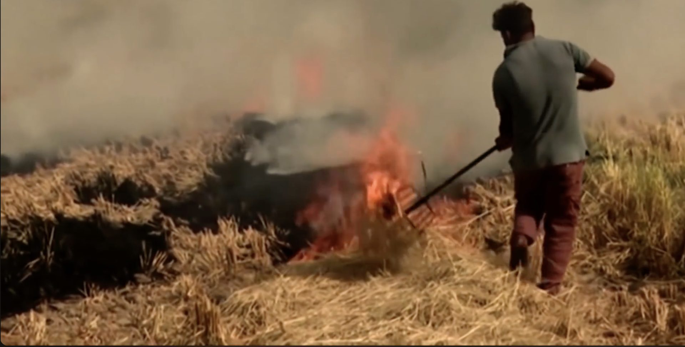

Area under paddy cultivation in Punjab

Punjab crop-residue management
A seasonal crisis.
A systems problem.
Stubble burning persists not because solutions are absent, but because farmer economics, access, operations, markets and enforcement do not yet work together.
Purpose of this microsite
A growing knowledge and action hub on stubble burning in Punjab, bringing together the crisis, its root causes and practical pathways for policy, investment and implementation.
01The Crisis
One harvest cycle concentrates a statewide challenge into a few weeks.
Punjab’s paddy crop generates a large volume of straw just as farmers must prepare for wheat. Burning resolves the immediate field-clearance problem, while shifting the costs to public health, soil productivity and the wider economy.
Read GDi’s crisis overview ↗Punjab snapshot
The Quantum of the Problem
One of India’s most productive agricultural systems generates a concentrated residue-management challenge every harvest season.
Paddy straw produced in a single harvest cycle
Approximately 51% of Punjab’s estimated crop area
Estimated fine particulate emissions from crop-residue burning
Who bears the cost
The Cost of Burning
Burning clears a field in hours, but the losses fall on public health, soil fertility and the wider economy.
Public cost
Air and Health
Smoke from burning fields harms the people who live closest to them.
26%
Fall in lung function among 10–18-year-old girls in Patiala villages during the burning season
Farm cost
Soil and Inputs
Burning destroys organic matter and nutrients that would otherwise feed the soil.
~400 kg
Organic carbon in every tonne of paddy straw, along with 5–8 kg nitrogen and 12–17 kg potassium
Source: PAU, Indian Farming, Feb 2025 ↗
Economic cost
Productive Value Lost
Straw that could be used as fuel is burnt instead.
~990 MW
Annual power potential of Punjab’s 5.71 million tonnes of surplus rice residue (2024–25)
The central contradiction: burning is rational for an individual farmer in the moment, but costly for the farm system and society.
04GDi’s Work on Stubble Burning Management
From fragmented interventions to a working system.
GDi works with governments, researchers, industry and communities to turn a complex environmental challenge into practical pathways for coordinated action.
Diagnose the systemCombine evidence, field learning and stakeholder perspectives to identify binding constraints.
Design viable pathwaysTest technical feasibility, farmer economics, markets, policy and operating requirements together.
Enable executionTranslate strategy into pilots, institutional roles, monitoring systems and conditions for scale.